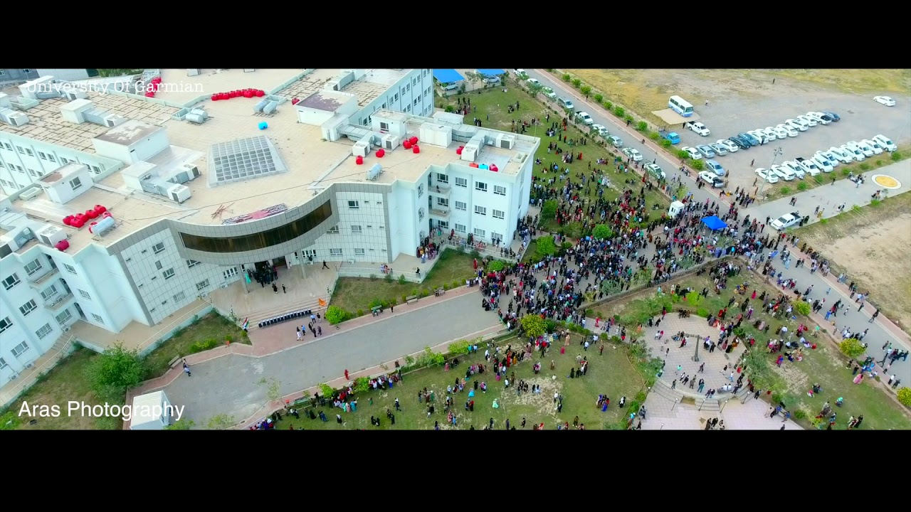

Garmian University

Garmian University is in the process of continuing to pay more attention to higher education for the Kurdistan Regional Government and by order of the Prime Minister No. (1670 on 7/8/2010) as a subjective and scientific need for our region in general and the Garmian region in particular. The establishment of Garmian University dates back to the transfer of both (education was established in 2004) and (basic education was established in 2008) in Kallar and the college (languages and humanities since 2004) and the college (physical education) and mathematical sciences in 2006) in Khanaqin, Khanaqin, which was Affiliated to Sulaymaniyah University at that time, then in 2011 they were all placed in Malacca from Garmian University. This university has developed significantly over a certain period of time, and for this reason, the College of Digital Engineering in the city of Kifri, the College of Science, the College of Physics in the city of Kalar, and the College of Computer and Information Sciences have been rebuilding the technology in Khanaqin and the Department of Building Engineering and the Department of Law. In Kalar, two independent scientific departments of the university.